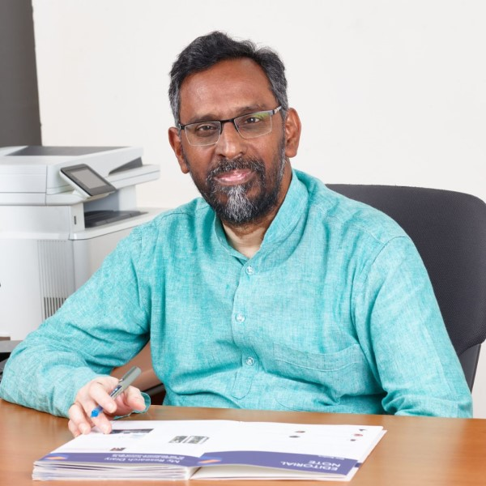

Director, IIITDM Kurnool
"At IIITDM Kurnool, we believe technical education finds its true culmination in social service. Our NSS volunteers embody the spirit of 'Not Me, But You' by applying their intellect and compassion to uplift neighboring communities."
The faculty mentors and student leaders driving social consciousness, youth empowerment, and community engagement at IIITDM Kurnool.
Explore past executive committees, student coordinators, and faculty advisors across previous academic tenures.